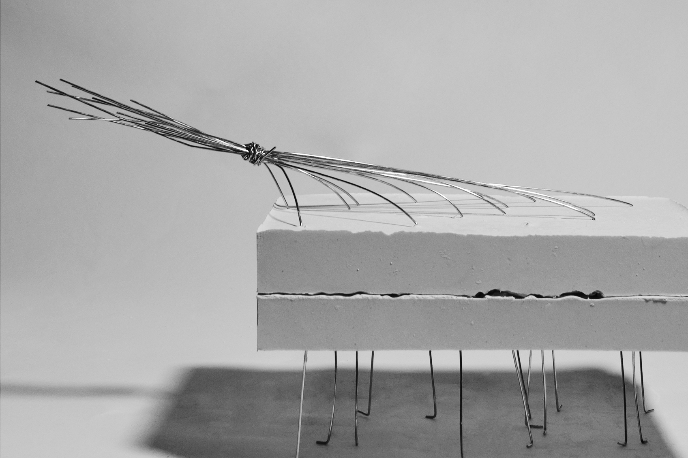
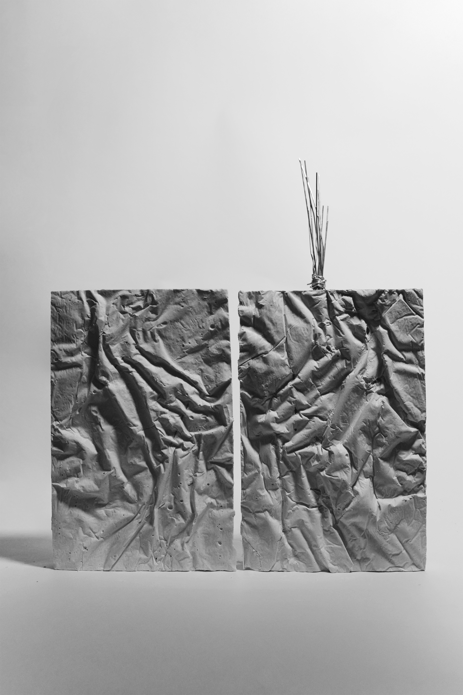
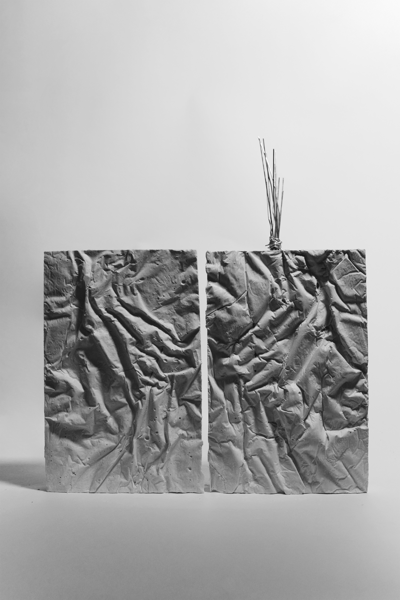
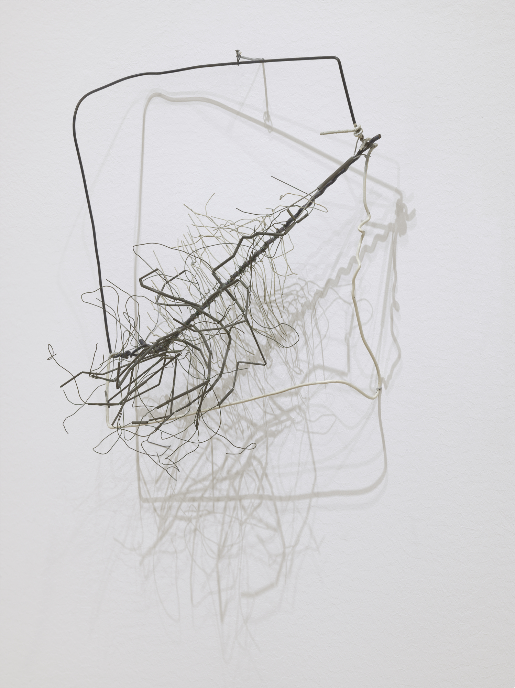
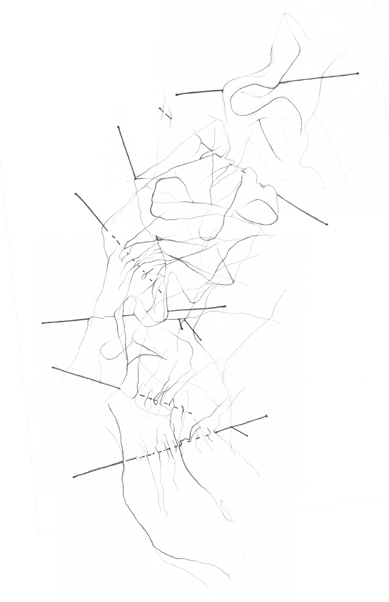
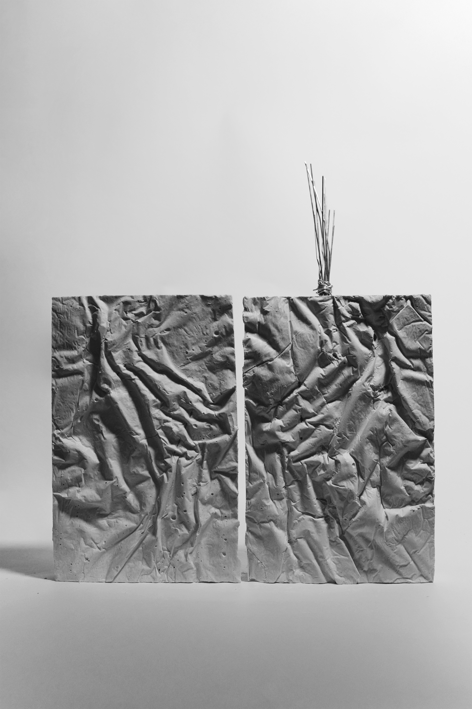
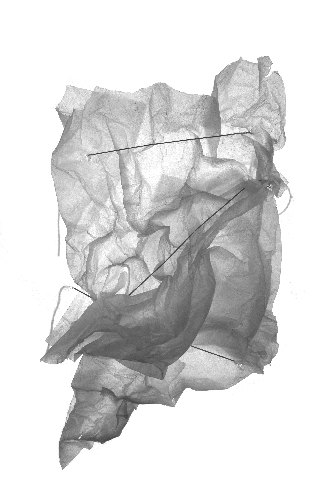

Core I Studio, Nikole Bouchard
 

Projection as Weaving
Core I Studio, Nikole Bouchard
Fall 2019
Defining “projection” as an act of weaving an image through a new substrate, I took a photograph of Venezuelan artist Gego’s “Drawing Without Paper” and projected it onto different media. The idea of the double—in the initial image, the sculpture and its shadow—is foregrounded by casting a single woven “projection” in canvas to create a positive and negative two-part model.



